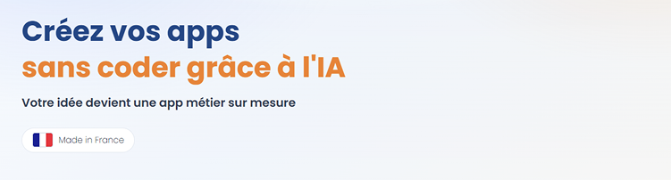

Documentation
Make
Automatisez des workflows multi-outils avec des scénarios Make connectés aux événements de votre app.
Opportunités d'automatisation
- Déclencher des synchronisations de données entre outils métier et app.
- Envoyer des alertes opérationnelles aux équipes internes.
- Construire des workflows d'approbation sur actions sensibles.
Checklist de mise en place
- Définir les événements déclencheurs et résultats attendus.
- Créer des scénarios Make avec des branches d'erreur explicites.
- Sécuriser endpoints webhook et identifiants.
- Valider le comportement de bout en bout en Simulation.
Note de fiabilité
Privilégiez des opérations idempotentes et des retries sûrs pour éviter les doublons en cas de rejeu de scénario.